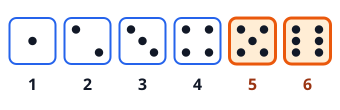

Ergebnisraum und Laplace-Wahrscheinlichkeit
Mit einem KI-Tutor lernen
Ein KI-Tutor erklärt dir diese Seite und hilft dir bei den Aufgaben. Wähl deinen Assistenten:
Mit Claude öffnen Mit ChatGPT öffnen Mit Mistral Vibe öffnen
Du nutzt dein eigenes Konto beim Anbieter. Der Assistent ist kein Angebot von lernapps.net: lernapps liefert nur Inhalte und Aufgaben. Die Wahl gilt für alle Seiten, nur auf diesem Gerät.
Ziel: Ich kann den Ergebnisraum aufschreiben und die Laplace-Wahrscheinlichkeit berechnen. Du brauchst dafür nur Brüche und das Kürzen – das kennst du aus Klasse 6; zum Wiederholen: Kapitel Bruchrechnung.
Probier zuerst
Aufgabe
Lösung
Richtige Antwort: 2
Ein Würfel zeigt 1, 2, 3, 4, 5 oder 6. Größer als 4 sind nur die 5 und die 6, also 2 Augenzahlen.
Günstige durch alle
Würfeln ist ein Zufallsversuch: Du weißt vorher nicht, was herauskommt. Jeder mögliche Ausgang heißt Ergebnis. Alle Ergebnisse zusammen bilden den Ergebnisraum (sprich „Omega“). Ein Ereignis ist ein Teil davon, zum Beispiel „Zahl größer als 4“. Seine Ergebnisse heißen günstig.

Alle sechs Ergebnisse des Würfels. Orange sind die günstigen aus der Aufgabe oben: 2 von 6.
Quelle: eigene Zeichnung. Lizenz: CC-BY-4.0.Jede Seite des Würfels fällt gleich oft, wenn du sehr oft würfelst. Ist das bei allen Ergebnissen so, heißt der Versuch Laplace-Versuch. Dann ist die Wahrscheinlichkeit der Anteil der günstigen an allen Ergebnissen – in der Aufgabe oben 2 von 6. P steht hier für Wahrscheinlichkeit (englisch probability), nicht für den Prozentwert aus dem Kapitel Prozentrechnung.
Gib die Wahrscheinlichkeit als gekürzten Bruch an. Sie liegt immer zwischen 0 (unmöglich) und 1 (sicher).
Ein Beispiel
Glücksrad mit Primzahlen

Alle 8 Felder sind gleich groß, also ist jede Zahl gleich wahrscheinlich.
Quelle: eigene Zeichnung. Lizenz: CC-BY-4.0.Du gewinnst bei einer Primzahl. Eine Primzahl hat genau zwei Teiler, 1 und sich selbst. Die 1 hat nur einen Teiler und ist darum keine Primzahl.
Antwort – Du gewinnst mit der Wahrscheinlichkeit 1/2, also in etwa jedem zweiten Spiel.
Nicht jeder Versuch ist ein Laplace-Versuch
Merke
„Günstige durch alle“ gilt nur, wenn alle Ergebnisse gleich wahrscheinlich sind. Mit zwei Würfeln gibt es die Augensummen 2 bis 12. Die 7 entsteht aber auf 6 Arten (1 + 6, 2 + 5, …, 6 + 1), die 2 nur auf eine (1 + 1). Die 7 ist also viel wahrscheinlicher. Ebenso bei einer Urne mit 3 roten und 7 blauen Kugeln: Nimm als Ergebnisse die einzelnen Kugeln, nicht nur die Farben „rot“ und „blau“.
Jetzt du
Aufgabe
Lösung
3/8 richtige Antwort
3 der 8 Kugeln sind rot.
1/2
Die zwei Farben sind nicht gleich wahrscheinlich, denn es gibt mehr blaue Kugeln.
3/5
Das ist rote durch blaue. Im Nenner stehen alle Kugeln.
5/8
5/8 ist die Wahrscheinlichkeit für eine blaue Kugel.
Jede der 8 Kugeln ist gleich wahrscheinlich, 3 sind günstig: P(rot) = 3/8.
Aufgabe
Drei Beispielaufgaben, jede mit ihrer Lösung:
Aufgabe Nr. 1
Du drehst ein Glücksrad mit 5 gleich großen Feldern, beschriftet mit A, B, C, D und E. Wie groß ist die Wahrscheinlichkeit für das Ereignis „ein Vokal (A, E, I, O oder U)“?
Tipp
Schreib zuerst alle Ergebnisse auf. Dann markiere die günstigen.
Lösung
- Alle Ergebnisse: Ω = {A; B; C; D; E}. Das sind 5, alle gleich wahrscheinlich.
- Günstig sind {A; E}, also 2 Ergebnisse.
- , gekürzt 2/5.
Richtige Antwort: 2/5
Aufgabe Nr. 2
Du drehst ein Glücksrad mit 8 gleich großen Feldern, beschriftet mit 1 bis 8. Wie groß ist die Wahrscheinlichkeit für das Ereignis „eine Zahl, die durch 3 teilbar ist“?
Tipp
Schreib zuerst alle Ergebnisse auf. Dann markiere die günstigen.
Lösung
- Alle Ergebnisse: Ω = {1; 2; 3; 4; 5; 6; 7; 8}. Das sind 8, alle gleich wahrscheinlich.
- Günstig sind {3; 6}, also 2 Ergebnisse.
- , gekürzt 1/4.
Richtige Antwort: 1/4
Aufgabe Nr. 3
Du drehst ein Glücksrad mit 7 gleich großen Feldern, beschriftet mit 1 bis 7. Wie groß ist die Wahrscheinlichkeit für das Ereignis „eine gerade Zahl“?
Tipp
Schreib zuerst alle Ergebnisse auf. Dann markiere die günstigen.
Lösung
- Alle Ergebnisse: Ω = {1; 2; 3; 4; 5; 6; 7}. Das sind 7, alle gleich wahrscheinlich.
- Günstig sind {2; 4; 6}, also 3 Ergebnisse.
- , gekürzt 3/7.
Richtige Antwort: 3/7
Aufgabe
Lösung
Richtige Antwort: Die Aussage stimmt nicht.
Die Augensummen sind nicht gleich wahrscheinlich: 12 gibt es nur als 6 + 6, die 7 auf sechs Arten.
Aufgabe
Drei Beispielaufgaben, jede mit ihrer Lösung:
Aufgabe Nr. 1
In einer Urne liegen 10 Kugeln, rote und blaue. Die Wahrscheinlichkeit, eine rote zu ziehen, ist . Wie viele rote Kugeln liegen in der Urne?
Tipp
Erweitere den Bruch so, dass im Nenner 10 steht: Zähler und Nenner mit derselben Zahl malnehmen (kennst du aus Klasse 6).
Lösung
- P(rot) = rote Kugeln : 10 Kugeln.
- Erweitere auf den Nenner 10: Zähler 2.
- In der Urne liegen 2 rote Kugeln.
Richtige Antwort: 2
Aufgabe Nr. 2
In einer Urne liegen 6 Kugeln, rote und blaue. Die Wahrscheinlichkeit, eine rote zu ziehen, ist . Wie viele rote Kugeln liegen in der Urne?
Tipp
Erweitere den Bruch so, dass im Nenner 6 steht: Zähler und Nenner mit derselben Zahl malnehmen (kennst du aus Klasse 6).
Lösung
- P(rot) = rote Kugeln : 6 Kugeln.
- Erweitere auf den Nenner 6: Zähler 4.
- In der Urne liegen 4 rote Kugeln.
Richtige Antwort: 4
Aufgabe Nr. 3
In einer Urne liegen 6 Kugeln, rote und blaue. Die Wahrscheinlichkeit, eine rote zu ziehen, ist . Wie viele rote Kugeln liegen in der Urne?
Tipp
Erweitere den Bruch so, dass im Nenner 6 steht: Zähler und Nenner mit derselben Zahl malnehmen (kennst du aus Klasse 6).
Lösung
- P(rot) = rote Kugeln : 6 Kugeln.
- Erweitere auf den Nenner 6: Zähler 2.
- In der Urne liegen 2 rote Kugeln.
Richtige Antwort: 2
Aufgabe
Lösung
Würfel – Gewinn bei einer Zahl größer als 4
P = 1/3 = 8/24.
Glücksrad mit 8 gleich großen Feldern, 3 davon gewinnen richtige Antwort
P = 3/8 = 9/24, der größte Wert.
Urne mit 3 roten und 7 blauen Kugeln – Gewinn bei Rot
P = 3/10, weniger als 3/9 = 1/3.
Glücksrad mit 5 gleich großen Feldern, 1 davon gewinnt
P = 1/5, die kleinste Chance.
Bringe 1/3, 3/8, 3/10 und 1/5 auf einen Nenner: 3/8 ist am größten.
Als Nächstes führst du zwei Zufallsversuche nacheinander aus und hältst alle Wahrscheinlichkeiten in einem Baumdiagramm fest.
Fehler gefunden oder eine Idee für diese App?